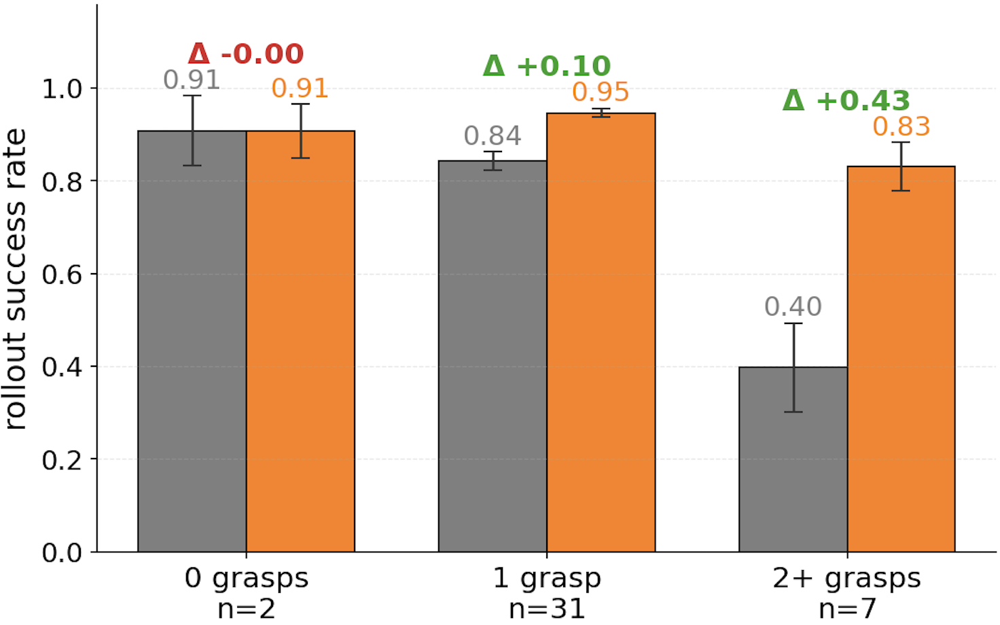
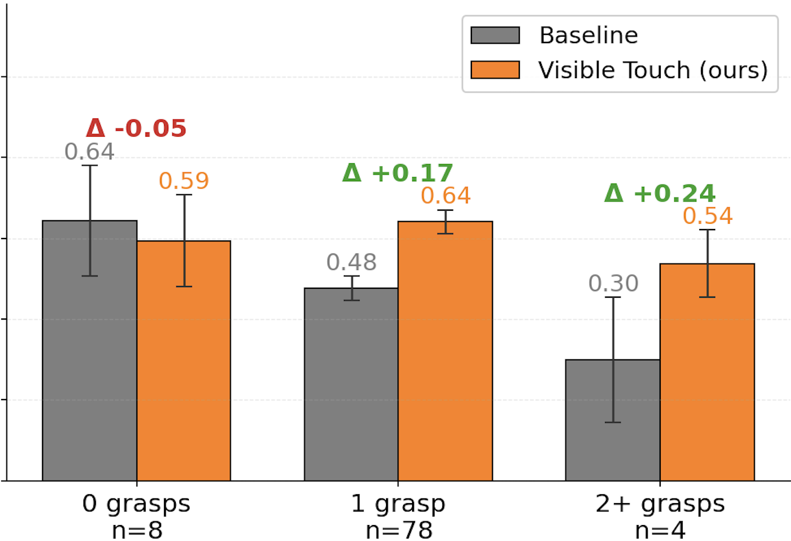
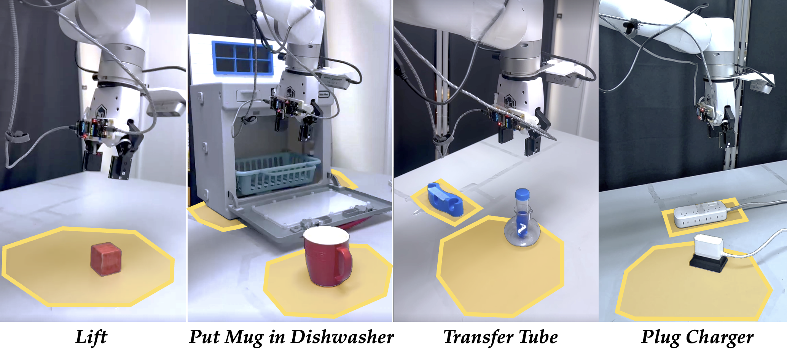
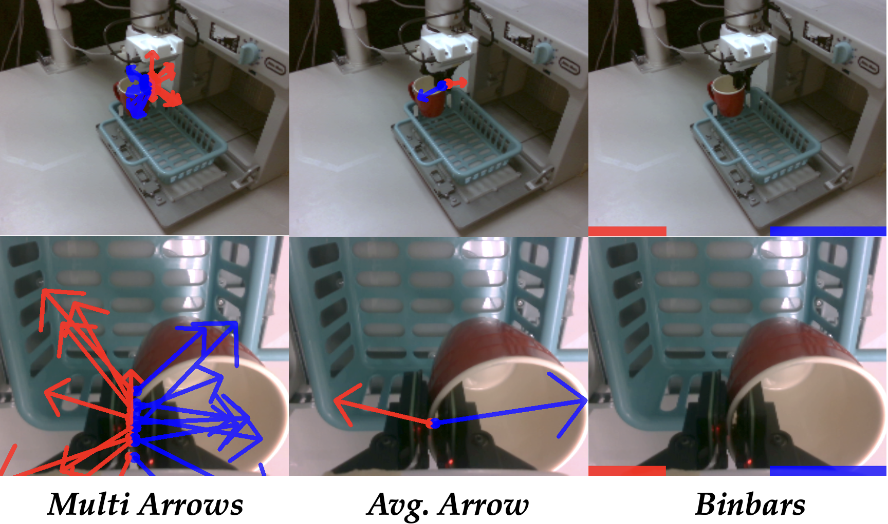

Visible Touch: Rendering Contact for Visuomotor Policies
Submitted to CoRL 2026
Abstract
Integrating contact information into visuomotor policies remains an open problem. Touch is essential to robust manipulation, yet most modern policies, including pretrained vision-language-action (VLA) models, operate from vision and proprioception alone. Existing approaches to closing this gap require specialized tactile hardware, add separate tactile encoders, or commit to non-image policy backbones, all incompatible with the modern paradigm of image-conditioned policies built on pretrained 2D visual representations. Our key insight is that the bottleneck is not the contact information itself, but how it is delivered: when contact signals are exposed in the same spatial frame as the scene the policy already attends to, they become directly usable by any image-conditioned policy without architectural changes. We operationalize this insight in Visible Touch, paired with a custom low-cost magnetic contact sensor that is open-sourced and fabricated from off-the-shelf parts via a parametric CAD-to-mold pipeline. Across the LIBERO benchmark, Visible Touch improves BC-Transformer success rates by 16 percentage points on average, with controlled comparisons showing that how contact is represented matters more than what contact information is provided. The pattern holds when fine-tuning pretrained VLAs: miniVLA on LIBERO gains 29 points on average, and π0.5 on four real-world contact-rich tasks gains 30 points with our custom sensor.
Method
Visible Touch has two coupled components: a rendering pipeline that projects per-element contact measurements onto RGB observations, and a low-cost magnetic tactile sensor that provides those measurements on real hardware. The rendering pipeline is sensor-agnostic. It can consume simulated contact forces from MuJoCo or raw magnetic flux readings from the physical sensor, and it does not require calibration into physical force units.
For an image-conditioned policy, a raw tactile index alone is ambiguous: the policy does not know where that contact occurred in the visual field, how it relates to the gripper, or whether it matters for the current task phase. Visible Touch instead projects each sensing element into the camera frame using the robot's live forward kinematics and calibrated camera parameters. The result is a geometrically registered overlay that moves with the gripper at every timestep.
Each sensing element is rendered as a visual primitive on top of the RGB observation. Multi-arrows preserve spatial structure by rendering one arrow per sensing element. Avg. Arrow compresses each finger into a single aggregate arrow. Binbars discard location and direction, showing only contact magnitude at fixed image positions. These variants let us ask whether the policy benefits from contact itself, from directional information, or from spatially grounded per-taxel detail.
- Drop-in input augmentation. The augmented image keeps the same resolution, channel count, and pixel range as the original RGB observation.
- No architecture changes. The same rendering pipeline transfers across BC-Transformer, miniVLA, and π0.5 without adding tactile encoders or state dimensions.
- No force calibration. A single visual scale controls arrow visibility; the method does not need a sensor-specific force model.
Hardware
The physical sensor is a slim magnetic tactile pad with a 3x3 sensing grid on each gripper finger. External forces deform a silicone elastomer surface embedded with permanent magnets, and a matching array of 3-axis magnetometers records the resulting magnetic field changes. An ESP32-based microcontroller streams raw flux readings at 50 Hz.
The hardware is designed to be accessible and replaceable. The elastomer contact layer is mechanically decoupled from the reusable PCB electronics, so worn pads can be swapped without rebuilding the sensor. A parametric CAD-to-mold pipeline generates multi-stage 3D-printable casting molds from user-specified geometry and magnet layouts, allowing the fabrication process to be adapted beyond the specific 3x3 instance used here.
The assembled sensor maintains a 4 mm profile and mounts on standard parallel-jaw grippers. The consumable elastomer and magnet components cost under $5, while the full assembled sensor costs under $50 including reusable electronics.
Figure 2: Hardware system. (a) Visuo-tactile setup: UFactory xArm7 with two RealSense cameras and two tactile sensors mounted on the gripper fingers. (b) Custom tactile sensor with anti-slip skin. (c) Internal structure of the tactile sensor. (d) Our parametric CAD-to-mold pipeline: CAD-generated alternative casting molds (top) and the 3D-printed molds with the fabricated sensor pads (bottom). (e) Physical characteristics of the sensor.
Experiments
We evaluate Visible Touch in simulation and on a real robot, across three policy families. The experiments are structured around three questions: whether contact overlays improve visuomotor policy performance, whether image-space representation matters compared with alternate contact inputs, and when overlays help most.
In LIBERO simulation, we train BC-Transformer in the multitask configuration with three seeds and evaluate final checkpoints with 20 rollouts per task. Plain uses LIBERO's default RGB and proprioception. Proprio receives the same contact information as Visible Touch, but concatenated to the state vector. Visible Touch receives that information as an image-space overlay. This comparison isolates representation choice from information content.
We also evaluate transfer to miniVLA, using a Qwen2.5 0.5B backbone with DINOv2 and SigLIP encoders at 224 px. For the real-world study, we fine-tune π0.5 with LoRA on two camera views and compare Baseline, Tac-View, and three Visible Touch overlay variants. Real-world tasks are scored at the sub-task level over 30 trials per condition.
Results
Across architectures and settings, the central pattern is consistent: contact helps most when it is represented in the same visual frame the policy already uses. On LIBERO, Visible Touch improves BC-Transformer success in every suite and camera configuration. In the 2-view setting, it improves average success by +16.1 percentage points over Plain and by +22.0 points over the matched Proprio contact baseline.
| Suite | 1-view (agentview) | 2-view (agentview + wrist) | |||
|---|---|---|---|---|---|
| Plain | Visible Touch | Plain | Proprio | Visible Touch | |
| OBJECT | 90.7 ± 4.4 | 94.7 ± 0.9 | 83.5 ± 3.6 | 80.0 ± 2.0 | 98.5 ± 0.5 |
| GOAL | 79.3 ± 3.2 | 90.5 ± 0.3 | 86.8 ± 2.9 | 81.5 ± 4.3 | 94.0 ± 1.0 |
| SPATIAL | 79.0 ± 2.0 | 89.3 ± 0.4 | 84.8 ± 2.8 | 80.0 ± 1.4 | 93.5 ± 1.3 |
| LONG | 41.8 ± 6.1 | 63.8 ± 1.2 | 52.8 ± 1.5 | 42.8 ± 5.1 | 86.5 ± 1.6 |
| Average | 72.7 | 84.6 | 77.0 | 71.1 | 93.1 |
The gains transfer to pretrained VLA-style policies. Our overlay-pretrained miniVLA reaches 64.0% mean per-task success on LIBERO_90 versus 52.6% for the released baseline. Fine-tuning on the four standard LIBERO suites improves every suite, with the largest improvement on LIBERO_LONG.
| Method | Pretraining | Fine-tuning (best-observed) | ||||
|---|---|---|---|---|---|---|
| LIBERO_90 | OBJECT | GOAL | SPATIAL | LONG | Avg. | |
| Baseline | 52.6% | 51.0% | 48.5% | 71.5% | 32.5% | 50.9% |
| Visible Touch | 64.0% | 73.5% | 80.5% | 94.0% | 71.0% | 79.8% |
Overlay benefit is not uniform across task types. It is largest where the plain visual baseline leaves headroom and where task progress depends on contact-rich grasp structure. The bucketed analysis below shows that no-grasp tasks show little benefit, single-grasp tasks show modest gains, and multi-grasp tasks show the largest gains.


Figure 3: Success rates of Visible Touch (Avg. Arrow overlay) over plain baselines, bucketed by gripper-close events. Tasks with no grasps show no benefit; single-grasp tasks show modest gains; multi-grasp tasks show the largest gains. The pattern holds across both BC-Transformer (a) and a pretrained miniVLA on LIBERO_90 (b).
| Visible Touch variant | OBJECT | GOAL | SPATIAL | LONG | Avg. |
|---|---|---|---|---|---|
| Avg. Arrow (default) | 98.5 ± 0.5 | 94.0 ± 1.0 | 93.5 ± 1.3 | 86.5 ± 1.6 | 93.1 |
| Multi-arrows | 94.3 ± 5.6 | 93.8 ± 0.5 | 90.2 ± 1.0 | 76.2 ± 2.7 | 88.6 |
| Binbars | 98.3 ± 0.3 | 92.7 ± 0.7 | 94.5 ± 0.5 | 78.8 ± 2.6 | 91.1 |


Figure 4: Real-world experimental setup. (a) Contact-rich manipulation tasks: Lift, Transfer Tube, Put Mug in Dishwasher, and Plug Charger. (b) Example contact overlays rendered onto external and wrist camera views.
On the real robot, Multi-arrows is strongest in every reported sub-task. This reverses the simulation trend, where Avg. Arrow dominates Multi-arrows. The likely reason is that real sensor taxels occupy fixed, spatially stable positions on the gripper surface, so per-taxel rendering preserves reliable information that a per-finger average discards.

| Method | Lift | Transfer Tube | Put Mug in Dishwasher | Plug Charger | ||||
|---|---|---|---|---|---|---|---|---|
| Pick | Pick | Insert | Pull | Pick | Place | Pick | Insert | |
| Baseline | 20/30 | 5/30 | 0/30 | 21/30 | 11/30 | 11/30 | 9/30 | 0/30 |
| Tac-View | 16/30 | 9/30 | 0/30 | 22/30 | 18/30 | 16/30 | 17/30 | 0/30 |
| Visible Touch: Binbars | 23/30 | 10/30 | 1/30 | 24/30 | 15/30 | 15/30 | 9/30 | 0/30 |
| Visible Touch: Avg. Arrow | 23/30 | 17/30 | 3/30 | 23/30 | 14/30 | 12/30 | 13/30 | 0/30 |
| Visible Touch: Multi-arrows | 24/30 | 24/30 | 16/30 | 28/30 | 22/30 | 21/30 | 18/30 | 2/30 |
Video Demonstrations
This section is reserved for rollout videos once the final media files are available. The intended organization is one row per real-world task, with side-by-side examples for the baseline, Tac-View, and the strongest Visible Touch variant.
| Task | Baseline | Tac-View | Visible Touch |
|---|---|---|---|
| Lift | Video placeholder | Video placeholder | Video placeholder |
| Transfer Tube | Video placeholder | Video placeholder | Video placeholder |
| Put Mug in Dishwasher | Video placeholder | Video placeholder | Video placeholder |
| Plug Charger | Video placeholder | Video placeholder | Video placeholder |
Conclusion
Visible Touch shows that contact can be made useful to image-conditioned manipulation policies by rendering it into the visual stream they already consume. This simple representation avoids new tactile encoders, force calibration, and policy architecture changes, while improving performance across simulation, pretrained VLA fine-tuning, and real-world contact-rich manipulation.
The results also clarify when contact overlays matter most. Gains are largest for tasks with headroom, long horizons, and multi-grasp structure, where contact events provide information that RGB alone often misses. In simulation, per-finger averaging gives the strongest overlay; in the real world, fixed taxel geometry makes per-taxel Multi-arrows the best-performing representation.